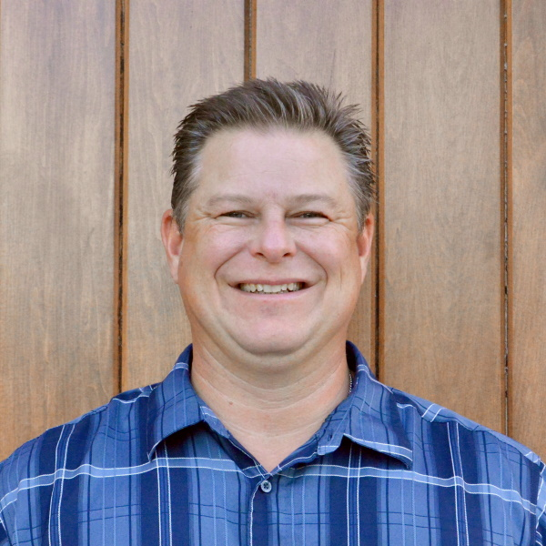
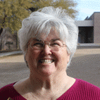

Welcome to
Light of the Desert
Sundays
Adults
New Generation Ministry
Serve
Our Mission
To share the love and the light of Jesus Christ so all people may know God
"For God so loved the world that he gave his only Son, so that everyone who believes in him may not perish but may have eternal life." John 3:16
"Go therefore and make disciples of all nations." Matthew 28:19
"You are the light of the world...let your light shine before others, so that they may see your good works and give glory to your Father in heaven." Matthew 5:14,16
"This is my command: Love each other." John 15b
Gather
people to meet Jesus
Grow
to become more like Jesus
Go
spread the love of Jesus
Our Strategy
Reach Out with the Good News of Jesus in a language people can understand because all people matter to God.
Participate Fully with a servant's heart, in mission activities based on our giftedness and passions.
Worship in a way that is inspiring, culturally relevant, participatory, grounded in the Bible, and our best.
Grow as obedient disciples of Jesus by listening to God in faithful study, prayer, and service, by acting on what God tells us, and by training others how to listen and act.
Care for the whole family, all ages and stages.
Share the resources God has given us to steward, with generous and compassionate hearts; giving to God and giving to those in need.
Our Beliefs
- Jesus Christ is the Son of God.
- Jesus lived on the earth, died on the cross, and was raised from the dead.
- Everyone is born with a sin disease and is separated from God; that separation can only be cured by trusting your life to Jesus.
- The Bible is the Word of God.
- Worship is our expression of love to God.
- The Church is all people who have trusted their lives to Christ; it is God's plan for reaching the world with the Good News of Jesus.
- Sacraments, Baptism and Holy Communion, are God's gifts to us. We understand a sacrament to be something that Christ Himself commanded us to do; it involves an earthly element (water, bread, wine), and is a promise by God and a celebration of forgiveness and new life.
- Jesus Christ will one day return to judge the living and the dead.
- Followers of Jesus are called to grow in a personal relationship with Jesus, to do what Jesus tells us to do, to allow God's Word to change us to be more like Jesus, and to share the love of Jesus with others.
Organizations
Lutheran Congregations in Mission for Christ (LCMC)
Lutheran Congregations in Mission for Christ is an association of congregations and individuals who are free in Christ, accountable to one another, rooted in the Scriptures and the Lutheran Confessions and working together to fulfill Christ's Great Commission to go and make disciples of all nations.
See lcmc.net for more information about LCMC
Willow Creek Association
Light of the Desert is one of more than 7000 churches from 90 different countries, from many different denominations and backgrounds who are committed to a singular idea: that inspired, encouraged, and equipped Christian leaders create thriving local churches that redeem their communities for Christ. The centerpiece of the WCA is the annual Global Leadership Summit that brings together by satellite more than 100,000 leaders who want to become better leaders for the sake of the Gospel. Light of the Desert leaders have been participating regularly in the Summit since 1995
See willowcreek.com for more information about the Willow Creek Association.
LCMC Statement of Faith
- We believe, teach, and confess the Triune God, Father, Son, and Holy Spirit.
- We believe, teach, and confess Jesus Christ as Lord and Savior and the gospel as the power of God for the salvation of all who believe in him. Jesus Christ is the Word of God incarnate, through whom everything was made and through whose life, death, and resurrection God fashions a new creation. The proclamation of God’s message to us as both law and gospel is the Word of God, revealing judgment and mercy in the person and work of Jesus Christ through whom God was pleased to reconcile all things to himself.
- The canonical Scriptures of the Old and New Testaments are the Word of God. Inspired by God’s Spirit speaking through their authors, they record and announce God’s revelation centering in Jesus Christ. Through them God’s Spirit speaks to us to create and sustain Christian faith and fellowship for service in the world.
- We believe, teach, and accept the canonical Scriptures of the Old and New Testaments as the inspired Word of God and the sole authoritative source and norm of our proclamation, faith, and life.
- We accept the Apostles’, Nicene, and Athanasian Creeds as true declarations of the scriptural faith we believe, teach, and confess.
- We believe, teach, and accept the Unaltered Augsburg Confession and the Small Catechism as true witnesses to the Word of God, normative for our teaching and practice. We acknowledge that we are one in faith and doctrine with all churches that likewise accept the teachings of the Unaltered Augsburg Confession.
- We believe, teach, and confess the other confessional writings in the Book of Concord, namely, the Apology of the Augsburg Confession, the Smalcald Articles, the Treatise, the Large Catechism, and the Formula of Concord, as further valid expositions of the Holy Scriptures.
- We believe, teach, and confess the gospel, recorded in the Holy Scriptures and confessed in the ecumenical creeds and Lutheran confessional writings, as the power of God to create and sustain the priesthood of all believers for God’s mission in the world.
Leadership
Pastor Paul Witkop
Pastor Bill Miller
Tamra Duncan

Patty Robinson
Shawn Chappel

Kate Gotschall

Sarah Witkop
Church Office Contact Information:
Address: 33175 N Cave Creek Road, Cave Creek, AZ 85331
Phone: 480-488-2716
Pastor Paul Witkop
480-488-2716
Bio
Personal Background
- Married to the love of my life and best friend, Betsy, on May 29th, 1993.
- Born in Springfield, Illinois to the greatest parents, Wellington and Marilyn. I have three brothers who are my next best friends, John, Philip, and David.
- Blessed with three tremendous children, Sarah (1994), David (1995) and Daniel (1998); and our dog, Snickers.
- Served as Pastor of Light of the Desert since April, 1995.
Rest of the Story
I attended Augustana College in Rock Island, Illinois and graduated with a degree in Accounting and Business Administration. I worked for Peat Marwick Mitchell as a CPA for six years before attending Trinity Evangelical Divinity School and Lutheran School of Theology at Chicago to earn a Masters of Divinity in 1990.
My hobbies include most sports, playing guitar, coaching my kid’s sports teams when they were younger, and music of all kinds. Hiking with Betsy is the greatest. I also really enjoy basketball, football, baseball, golf, tennis, and jogging. We all enjoy traveling and hanging out with our family and friends. I am an avid fan of the Phoenix Suns, Green Bay Packers, and San Francisco Giants.
Pastor Bill Miller
Bio
Joining the Light of the Desert family in August 2019, Bill Miller has been serving in church leadership in various forms since 1993 when he accepted the role of Campus Coordinator for the Canterbury Community at Arizona State University. In those years Bill supported various lay ministries varying from college groups to high school youth programs, as well as ecumenical renewal movements throughout Arizona and Southern California. Always aware of God's call in his life, Bill and his family began the journey for ordination in 2008.
Graduating from Arizona State University in 1996 (B.S. in Environmental Resource Sciences), Bill has concurrently served in the church while working as a wildlife biologist throughout Arizona primarily with the U.S. Army Corps of Engineers. He completed his Masters of Divinity from Luther Seminary in 2018.
In additional to his current role as the Discipleship Pastor at Light of the Desert, Bill continues to work with the U.S. Army Corps of Engineers as a Regulator, Leadership Development coach and as a Master Resilience Trainer.
Bill and Judy (his incredible wife and partner in the Gospel since 1996) enjoy camping, sailing and generally being together. They have two amazing children: Isabella, enrolled at Grand Canyon University; and Billy, a student at Desert Edge High School.
Tamra Duncan
Director of Music Ministries
480-620-4762
Bio
Hello, I am Tamra Duncan, the Director of Music Ministries at Light of the Desert Lutheran Church. I began my ministry here in 2007 but have been involved in church music ministry for the majority of my life.
My roots are based out of Wisconsin. I grew up on a small farm in Pewaukee Wisconsin. My parents were not musical at all but they scraped enough money together to bless my brothers and I with piano lessons. I loved playing the piano and my brothers, well... not so much. I continued taking lessons and decided with the help of my high school choir teacher to pursue music in college. I moved to Florida and majored in piano performance then took a hiatus and eventually graduated from Grand Canyon University with my bachelors in music (emphasis in choral studies and voice) and went on to a master’s degree in music education through ASU. I have been teaching music in the Paradise Valley School district for 15 years. I currently teach choir and piano at Paradise Valley High School.
When I’m not working I love spending time with my husband Jeff and my two dogs. I have 2 grown daughters, Tonya and Kia who fill me with joy and make me so proud. Hiking, biking, working out, reading and traveling are some of my favorite things to do. God has blessed me greatly in doing what I love as a career with people that share the same passion. God is good, All the time.
Patty Robinson
Administrative Assistant to the Pastor
480-488-2716
Bio
My life verse is Jeremiah 29:11 “For I know the plans that I have for you,” declares the LORD, “plans for welfare and not for calamity to give you a future and a hope.” This verse has certainly held true at many times in my life but especially as the Lord led me to worship at Light of the Desert. Thirty years of service in the corporate world was enough for me and God called me to “trust” him for my future – and to devote more of my time to his work. I have served him here at LOD as a volunteer: teaching, leading small groups, and as the Director of Adult Ministries; when the opportunity came to work alongside the staff as Administrative Assistant to the Pastor – that was just icing on the cake. Every day I look forward to seeing what “new plan” God has for me and I am blessed to be a part of this church family.
Shawn Chappel
Co-Director of Children's Ministries
480-329-2020
Bio
My wife Laura and I first visited Light of the Desert in the summer of 2003 with our children Grace and Sam for Vacation Bible School. We were blessed and drawn by the warm reception of the Light of the Desert Family and within the year we joined the church as members. In September of 2004 our family was blessed with the addition of our daughter Caroline and she was baptized at LOD a short time later. I volunteered intermittently with several ministries at LOD including serving on the church council. After serving on the council I answered the call to teach Sunday School to the 3rd – 5th Graders at LOD. This became a real blessing and source of joy for me. I was blessed with more free time and began teaching more frequently until it became a regular thing. I feel very called and excited about serving as Director of Children’s Ministries.
Outside of the church I was in the hospitality business for 30 years with 25 of those years as an aspiring cook and finally an Executive Chef. The last five years of my career in the hospitality business were as a Clubhouse Manager for a private golf club in Scottsdale, AZ. I am currently a Realtor with Russ Lyon Sotheby’s International Realty and enjoying much more free time with my awesome wife Laura and our wonderful children.
My Life Verse is Jeremiah 29:11
For I know the plans I have for you,” declares the LORD, “plans to prosper you and not to harm you, plans to give you hope and a future.
Kate Gotschall
Co-Director of Children's Ministries
Bio
Hello! I am Kate Gotschall and I am the Co-director of Children's Ministry at Light of the Desert since October of 2018
My husband, Matt and I along with our two girls, Lauren and Emily relocated to the Valley of The Sun in March of 2016 from Ankeny, Iowa. When we first landed in Cave Creek, we visited a few different churches and always came back to Light of the Desert because it felt like home! Teaching is a true passion of mine. I graduated from Creighton University with a Bachelor of Science in Elementary Education. I taught 3 years in Des Moines at Christ the King Elementary and then made the move to corporate life, working at Nationwide Insurance. When I came on board at Nationwide, I thought I would become a corporate trainer and ended up in the project world, which I absolutely love! Since my oldest was 2 years old, I have taught Sunday School in one capacity or another and upon joining Light of the Desert I started to volunteer as a teacher. I was absolutely thrilled when asked to join the staff and work alongside my amazing peers, helping to share God's light and Word with others!
In my spare time, I enjoy spending time with my family exploring all this beautiful state offers! I love to cook, bake, hike and enjoy the pool! I am thrilled to be driving distance to the ocean as well as the northern pines! One of my favorite Bible verses is John 13:34, “And now I give you a new commandment: Love one another. As I have loved you, so you must love one another.
Sarah Witkop
Worship and Student Pastor
Bio
Hi, my name is Sarah! I am the Worship and Student Pastor at Light of the Desert. I am grateful for this opportunity to serve!
Light of the Desert has been my church home since 1995 and I am grateful for my second family here. I attended Grand Canyon University for my undergraduate degree (Lopes UP!) and completed my graduate program at Fuller Seminary. In my spare time, I love spending time with my friends and family, playing the piano, and taking every opportunity to be outside...especially to hike.
I cannot wait to see how God continues to use those at Light of the Desert to accomplish His great plan in Cave Creek and the rest of the world. He is so faithful! One of my favorite Bible verses is Philippians 3:8, "Indeed, I count everything as loss because of the surpassing worth of knowing Christ Jesus my Lord. For his sake I have suffered the loss of all things and count them as rubbish, in order that I may gain Christ."
Services
Watch live at 9:00 am on Sunday Morning:
Sunday services are currently canceled due to COVID-19. During this time, our Sunday service will be live streamed and a recording of our latest service will be available. See our COVID-19 updates page for more information.
Location
Watch Online
Streamed Services:
Mid-Week Devotionals:
Latest Message:
Click on the bars in the upper right corner of a video to show all videos in a playlist
To see older sermons, visit our YouTube Channel
Connection Card
Church Office Contact Information:
Address: 33175 N Cave Creek Road, Cave Creek, AZ 85331
Phone: 480-488-2716
Calendar
News Flash
Adults
Adult Education
Sunday Morning Class
Current Study: "A Look at the Gospels"
Sunday Mornings 10:30am
Light of the Desert
Contact John McGregor for more information:
Wednesday Morning Class
Current study - Acts
Wednesday Mornings 9:00 AM
Light of the Desert
Contact Pastor Paul for more information:
A Lenten Workshop: Building a Resilient Family of Faith
Wednesday Evenings 6-8 PM
Light of the Desert
Contact Pastor Bill for more information:
Men’s Ministry
Men's Bible Study
Wednesday Mornings 6:30am
Mimi's Cafe
Contact Pastor Paul for more information:
Spring Men's Retreat
Mountain Ridge, Payson, AZ
May 1-3
Contact Travis Gall for more information:
Women’s Ministry
Tuesday Evening Bible Study
Every Tuesday 6:30pm
Beginning Mid-February
Room 101 at the church
Contact Patty Robinson for more information:
Spring Women's Retreat
Chapel Rock, Prescott, AZ
April 24-26
Contact Nancy Haley for more information:
New Generation Ministry
Our New Generation Ministry is geared to meet the spiritual needs of students from middle school all the way through our Young Adult and Family groups. Please reach out to Sarah () if you have any questions!
Middle School
Middle School Youth Group
All 6-8th graders are welcome to join us Sunday nights from 4:30-5:45 in the LOD youth room. We'll play games, eat food, and have a great time together!
High School
High School Youth Group
All 9-12th graders are invited to come hang out at youth group on Sunday evenings from 6-7:30. We have dinner together, check-in, and have an engaging time of discussion. Currently, we meet at a family's home, so please reach out to Sarah for more information. Would love to see you there!
Young Adults
Young Adult Gathering
Tuesday, March 10
Majerle's Desert Ridge
Meet at 6:30, Trivia Night begins at 7
Serve
In Our Church
Donut Servers - Organizes our Sunday morning refreshments
Contact Yvonne Ziegler for information: yziegler@att.net
Greeters and Ushers - Smiling faces with important info
Contact Peggy for information:
Communion Assistants - Helping on the 1st and 3rd Sundays
Contact Nancy Haley for information: nanc89247@aol.com
Music - Play and sing on our music team
Contact Sarah for information:
Technology - Love tech? We’ve got a spot for you
Contact Jeff Duncan for information:
In Our Community
Chris Becker Dining Hall
Second Sunday of every month - 3:30-6:30pm
Meet at 3:30 in the LOD parking lot
Contact Ken Andrzejewski for more information:
In Our World
Agua Prieta Home Building Mission
2020 spring weekends: February 21-23 and April 17-19
Contact Jeff for more information:
Check out this video for a look at what to expect on a weekend trip.
Hope 4 Kids International - Kasolo, Uganda
Through Hope 4 Kids International, we sponsor a village in Kasolo, Uganda. Many people from our community have visited the incredible people of Kasolo over the years! If you are interested in going on an upcoming trip, please reach out to Patty().
COVID-19 Updates
Light of the Desert Family,
Isaiah 40:31 - But those who trust in the Lord will find new strength. They will soar high on wings like eagles. They will run and not grow weary. They will walk and not faint.
Wow…what a week! The purpose of this email is to update you and let you know some key decisions that have been made by our leadership team today. We want to offer guidance on how we continue to be the church to one another and our community.
Because there is so much information, we desire to be very direct and clear in our communication. If you have confusion about anything, please reach out to our administrative assistant, Patty Robinson (), and she can assist you.
Cancelations and Online Worship
1. Effective immediately, all Light of the Desert ministry related meetings and events are cancelled or postponed until April 1. At that time, we will evaluate based upon guidance from local and federal officials. This includes our weekend worship services and weekday programs along with groups that meet on and off-campus. This decision is based upon:
- Ongoing concern for those most severely impacted by the COVID-19
- New guidance from CDC to not have any meetings that exceed 10 people
- Guidance from health officials that we all play a role in the urgent need to “flatten the curve” of the pandemic so our hospitals are not overwhelmed at one time
2. An online Weekend worship experience will be available as well as our Midweek video. These videos are available on our Watch Online page. We will be open for prayer with our regular hours (10am to 2pm) during the week.
Helping Connect with Each Other
1. Whatever ministry area you are connected to, you are going to begin to hear guidance from your ministry leader this week on creative ways for everyone to stay connected. One of our primary focuses going forward will be to provide whatever comfort of normalcy that we can and to combat the isolation that is going to, unfortunately, be part of this process for everyone but we can be creative in combatting that within our community -- even for those without technology.
2. We anticipate that there will be a growing need to assist people who should not leave their homes with basic needs. If you would like to donate, you may send a check by mail or give online through our website.
3. We will continue to reach out to elderly and those isolated via phone calls. We invite you to do the same. If you would like to volunteer to assist in this important outreach, please call the church at (480)-488-2716 or email Patty Robinson at .
4. Please keep praying. We join all of you in praying for the health, emotional and spiritual well-being of our church family, community, nation and world.
Psalm 133:1 - ”How good and pleasant it is when God’s people live together in unity!”
The Spirit of God unites us in His truth and His goodness---even when we cannot physically be together. We are energized and excited to serve you and partner with you throughout this crisis.
Trusting Jesus with you,
Your Light of the Desert Team
For more information on the coronavirus (COVID-19) and how to protect yourself and others visit: